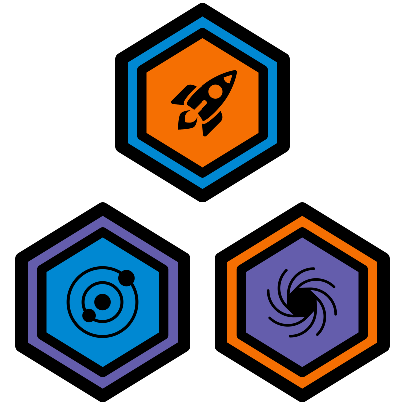

1 Intro Katas
1.1 Code Of Awesomeness 1 Kata (difficulty = 1)
1.2 Code Of Awesomeness 2 Kata (difficulty = 1)
1.3 Code Of Awesomeness 3 Kata (difficulty = 1)
1.4 Game Jam Kata (difficulty = 1)
1.5 Hello World 1 Kata (difficulty = 1)
2 Orbit Katas
2.1 Orbit 1 Kata (difficulty = 1)
2.2 Orbit 2 Kata (difficulty = 1)
2.3 Orbit 3 Kata (difficulty = 1)
2.4 Orbit 4 Kata (difficulty = 1)
3 Star And Planet Katas
3.1 Star And Planet 1 Kata (difficulty = 1)
3.2 Star And Planet 2 Kata (difficulty = 2)
3.3 Star And Planet 3 Kata (difficulty = 3)
3.4 Star And Planet 4 Kata (difficulty = 2)
4 Moon And Ring Katas
4.1 Moon And Ring 1 Kata (difficulty = 2)
4.2 Moon And Ring 2 Kata (difficulty = 3)
4.3 Moon And Ring 3 Kata (difficulty = 4)
4.4 Moon And Ring 4 Kata (difficulty = 2)
4.5 Moon And Ring 5 Kata (difficulty = 3)
5 Space Objects Katas
5.1 Space Objects 1 Kata (difficulty = 2)
5.2 Space Objects 2 Kata (difficulty = 3)
5.3 Space Objects 3 Kata (difficulty = 2)
5.4 Space Objects 4 Kata (difficulty = 2)
5.5 Space Objects 5 Kata (difficulty = 3)
6 Star System Katas
6.1 Star System 1 Kata (difficulty = 3)
6.2 Star System 2 Kata (difficulty = 3)
6.3 Star System 3 Kata (difficulty = 2)
6.4 Star System 4 Kata (difficulty = 3)
6.5 Star System 5 Kata (difficulty = 2)
7 VR Assets
8 Game Jam
8.1 Objective
8.2 Partnering Up
8.3 Prompt
8.4 Hints and Help!
8.5 Staff Role During the Jam
8.6 Scoring
8.7 Leading into the Jam